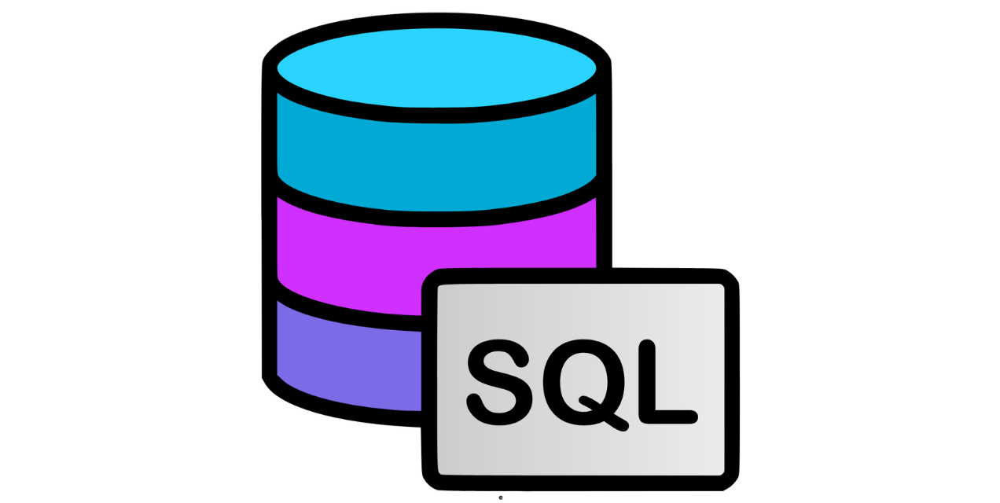

In this project, I cleaned and processed a train crash dataset, handling missing values and outliers. I developed a K-Nearest Neighbors (KNN) model, experimenting with different k values, and built a Logistic Regression model with over 85% accuracy..
I also trained multiple Decision Tree models, optimizing tree depth for better performance. Using Matplotlib and Seaborn, I visualized insights into passenger demographics and survival rates.
The models were continuously fine-tuned to achieve high prediction accuracy..

In this project, I analyzed a dataset of house sales to identify trends and patterns in the housing market. Using Tableau, I created interactive dashboards to visualize key metrics such as sale price, location, and number of bedrooms. The project focused on exploring relationships between these variables and their impact on house prices. I used filters, calculated fields, and various visualizations, including bar charts and heatmaps, to provide a clear understanding of the factors influencing house sales.

In this project, I analyzed pizza sales data to uncover business insights. Using Power BI, I created interactive dashboards with KPIs to track performance metrics. I leveraged DAX to calculate custom measures and built visuals to highlight daily and monthly sales trends. Additionally, I identified the best- and worst-selling pizzas, providing actionable insights to optimize sales strategies.
.png)
I designed an interactive Airbnb NYC Dashboard to provide actionable insights into booking trends and host performance. The dashboard includes visuals for total bookings by month and neighborhood group, average prices across neighborhoods, total reviews, and a ranking of the top 10 hosts. Dynamic filters allow users to drop down into specific metrics, offering a comprehensive view of booking patterns, pricing trends, and customer feedback. This project showcases advanced data visualization techniques and user-friendly design for effective data-driven decision-making..

This project showcases an in-depth analysis of a pizza delivery database, utilizing SQL to extract actionable insights from sales and order data. The project leverages various SQL queries to analyze key metrics and trends, providing a comprehensive view of business performance..
In this project, I used SQL to analyze booking trends and customer behavior, providing actionable insights aimed at optimizing business operations. By examining key metrics such as cart abandonment, purchase timelines, booking patterns, and demographic trends, I identified opportunities to improve customer engagement and revenue generation.